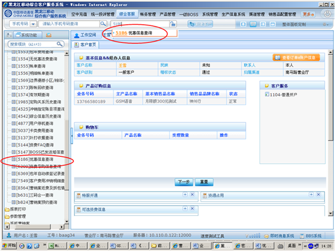
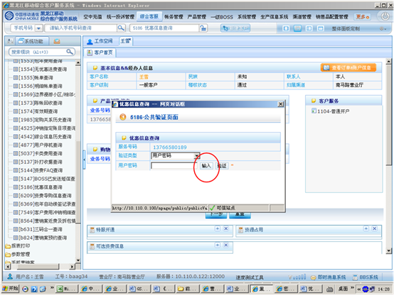
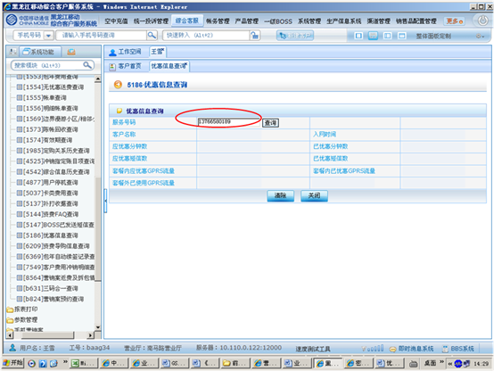
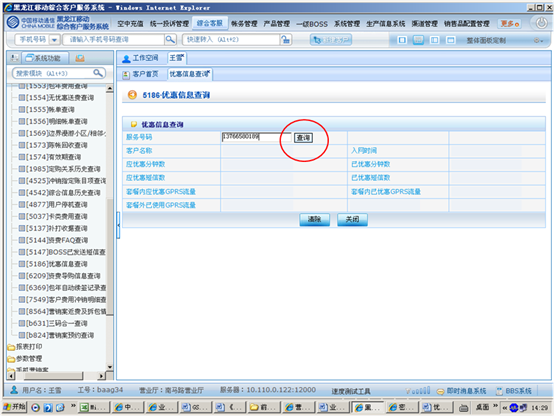
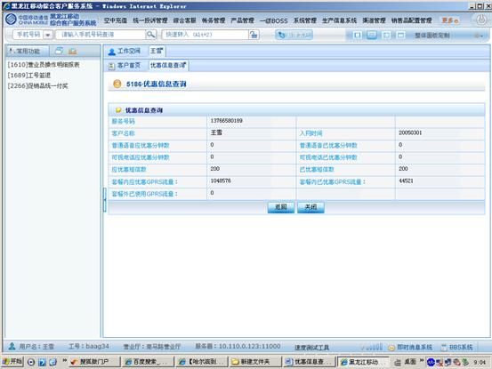

1、进入方式
在“请输入手机号码查询”处输入客户的手机号码，点击查询按钮，点击综合客服-业务查询-优惠信息查询，或在“快速转入”处输入代码5186优惠信息查询，点击“回车”确定。
2、界面形式及操作步骤说明
（1）在“请输入手机号码查询”处输入客户的手机号码，点击查询按钮，点击综合客服-业务查询-优惠信息查询，或在“快速转入”处输入代码5186优惠信息查询，点击“回车”确定。

（2）点击“输入”，由客户通过密码小键盘输入服务密码。

（3）输入“服务号码”。

（4）点击“查询”。

（5）可查询客户主套餐及可选套餐合计包含的普通语音应优惠分钟数、可视电话应优惠分钟数、应优惠短信数、套餐内应优惠GPRS流量，及普通语音已优惠分钟数、可视电话已优惠分钟数、已优惠短信数、套餐内已优惠GPRS流量、套餐外已使用GPRS流量等信息。
